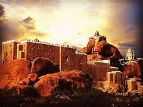
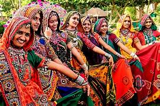
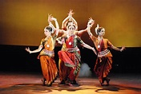
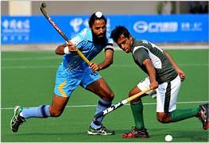
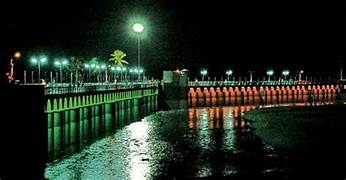
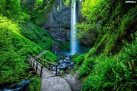
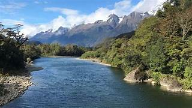

Indian culture
1.Temple
2.Food
3.Dance
4.Dance
5.sports
6.Agriculture
7.Tourist place
8.Falls
9.River
10.Education
Temple
A Hindu temple, or Devasthana or mandir or pura or koil or kovil in various languages,[a] is a house, seat and body of divinity for Hindus.
It is a structure designed to bring human beings and gods together through worship, sacrifice, and devotion.
The symbolism and structure of a Hindu temple are rooted in Vedic traditions, deploying circles and squares.
It also represents recursion and the representation of the equivalence of the macrocosm and the microcosm by astronomical numbers,
"specific alignments related to the geography of the place and the presumed linkages of the deity and the patron
Food
Indian cuisine consists of a variety of regional and traditional cuisines native to India.
Given the diversity in soil, climate, culture, ethnic groups, and occupations
These cuisines vary substantially and use locally available spices, herbs, vegetables, and fruits.
Indian food is also heavily influenced by religion, in particular Hinduism and Islam, cultural choices and traditions
Dress
Clothing in India varies with the different ethnicities, geography, climate, and cultural traditions of the people of each region of India.
Historically, clothing has evolved from simple garments like kaupina, langota, achkan, lungi, sari, to rituals and dance performances.
In urban areas, western clothing is common and uniformly worn by people of all social levels
Dance
Dance in India comprises numerous styles of dances, generally classified as classical or folk.
Folk dances are numerous in number and style and vary according to the local tradition of the respective state, ethnic, or geographic region.
As with other aspects of Indian culture, different forms of dances originated in different parts of India, developed according to the local traditions and also imbibed elements from other parts of the country.
Sports
Sport is a significant part of life in India. The country has a very long sports history, with sports being a part of tradition, culture, finance and entertainment.
People in India closely follow various sports and enthusiastically participate in them.
Cricket is the most popular spectator sport in the country, and citizens often play it as a recreational activity.
it generates the highest television viewership, and features full-capacity audiences in stadiums during international and Indian Premier League (IPL) matches. It is part of popular culture.
Agriculture

Agriculture encompasses crop and livestock production, aquaculture, fisheries and forestry for food and non-food products.
Agriculture was the key development in the rise of sedentary human civilization, whereby farming of domesticated species created food surpluses that enabled people to live in cities.
While humans started gathering grains at least 105,000 years ago, nascent farmers only began planting them around 11,500 years ago.
Sheep, goats, pigs and cattle were domesticated around 10,000 years ago. Plants were independently cultivated in at least 11 regions of the world.
Tourist Place
The dam was originally built by King Karikalan of the Chola Dynasty in c. 100 – c. 150 CE.
It is located on the river in Trichy district, exactly 14 km from the city of Tiruchirappalli and 45 km from the city of Thanjavur.
The idea behind the construction of the dam was to divert the river to the delta districts thereby boosting irrigation.
This dam was re-modeled by the British during the 19th century.
In 1804, Captain Caldwell, a military engineer, was appointed by the British to make a study on the Kaveri river and promote irrigation for the delta region.
Falls
A waterfall is any point in a river or stream where water flows over a vertical drop or a series of steep drops.
Waterfalls also occur where meltwater drops over the edge of a tabular iceberg or ice shelf.
Waterfalls can be formed in several ways, but the most common method of formation is that a river courses
over a top layer of resistant bedrock before falling on to softer rock,
which erodes faster, leading to an increasingly high fall.
Waterfalls have been studied for their impact on species living in and around them.
River
India, officially the Republic of India (Hindi: Bhārat Gaṇarājya) is a country in South Asia.
It is the seventh-largest country by area the most populous country and the world's most populous democracy.
Bounded by the Indian Ocean on the south, the Arabian Sea on the southwest.
the Bay of Bengal on the southeast, it shares land borders with Pakistan to the west.
China, Nepal, and Bhutan to the north; and Bangladesh and Myanmar to the east.
In the Indian Ocean, India is in the vicinity of Sri Lanka and the Maldives
its Andaman and Nicobar Islands share a maritime border with Thailand, Myanmar, and Indonesia.
Education
Education is the transmission of knowledge, skills, and character traits.
There are many debates about its precise definition, for example, about which aims it tries to achieve.
A further issue is whether part of the meaning of education is that the change in the student is an improvement.
Some researchers stress the role of critical thinking in distinguishing education from indoctrination.